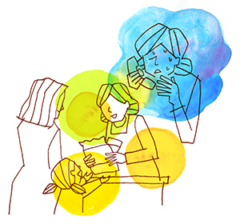

全般性不安障害（不安神経症）3
神経症は病気ではない 〜森田療法実践から学ぶ本当の生き方〜
（全般性不安障害（不安感で何もできない、他）、強迫性障害(うつ病恐怖、他））
森田 正子（仮名）40代・自営業（体験フォーラム会員）
神経質による症状
私が自分の神経質性格に執着しはじめたのは、小学校高学年の頃。ピアノの発表会が終わった後、動悸がいつまでも残ることに気付いたのです。自分は心臓が悪いのではないだろうか。でも、そのことを誰かに相談するでもなく、毎年発表会の終わった後、苦しい思いをしていました。ただ、負けず嫌いで目立ちたがり屋の性格で、動悸がするからといってピアノをやめるでもなく、学校の行事でも、代表でピアノを弾く機会があれば、絶対自分がやらないと気がすまないような感じでした。
しだいに神経質による体の症状が増えてきました。中学生になると、お弁当を食べることが難しくなりました。家族で行ったレストランで、うどんを吐き出してしまったのです。ちょうどその時、隣のテーブルのおじさんと目が合いました。「きっと、汚いと思われた！」と焦ってしまい、そのことがトラウマになり、人前で食事をするとき、また吐くのでは、というとらわれができてしまったのです。高校の時、下級生が自殺しました。それからは、「自分も自殺するのではないか」というとらわれが離れません。高校は進学校でした。周りは必死に勉強して、どんどん成績を上げてきます。私も頭では「良い大学に行きたい」「東京に出て目立ちたい」なんてことを考えていましたが、体が全くついてきませんでした。
就職から結婚まで
そんなこんなで、落ちこぼれた私は、なんとか地元の短期大学にもぐりこむことが出来ました。短大生活は短いもので2年経つとみんな就職活動を始めます。私はというと、社会で働くという恐怖を克服できず、4年生大学への編入から大学院へと進学しました。ずっと母に過保護で育てられた私は、自分でお金を稼ぐ、ということすら恐怖だったのです。ところで大学の時、生まれて初めてアルバイトを経験しました。友達がみんなやっているのを見て、短期間なら私にもできるのではないかと思ったのです。それをきっかけにいくつかのアルバイトを経験し、少しずつ人前にでることができるようになっていきました。大学院を出れば、いよいよ就職しなくてはなりません。ちょうど学生最後のアルバイト先だった郵便局で、「試験を受けてみたら」と言われ、あっさりと就職先が決まりました。
就職してからは新人研修、転勤、色々ありましたが、人並みにこなしてきました。このころから嘔吐恐怖もなくなり、自殺恐怖も忘れるようになってきました。同僚と恋愛結婚、出産。ストレスがたまると周期的に憂鬱な気分に襲われることがありましたが、何かをしているうちに忘れている、ということが続き、何とかだましだまし生活していたように思います。結婚しても、私たち一家は自分の実家の敷地内の離れに住んでいました。結婚しても、うわべでは彼と新婚生活を送っていたけれど、精神的には完全に母に依存していました。
ところで、母は他人が嫌いです。自分の価値観と少しでもずれた考えをすれば、母から嫌われる対象になってしまいます。元夫は母をすごく恐れていました。そのくせ私といるときには態度が大きくなる。母は、そんな彼が大嫌いだったのです。毎日母と彼の板挟みになるのが耐えられず、結局私が選んだのは母のほうでした。わずか2年足らずで娘を連れて離婚してしまったのです。彼を選んで実家を出る、という勇気は私にはありませんでした。
娘の入学で気が抜けた瞬間…
そのころ、私の子ども（娘）は幼稚園に通っていました。娘も私ゆずりの神経質性格で、人間関係にとても敏感でした。朝になると泣いて幼稚園を嫌がります。朝の「イヤイヤ」を克服するには、引きずってでも幼稚園までは行ってみるほうが良いのは私にもわかっていました。ですが、これが母には許せない。嫌がるのに幼稚園に無理やり連れていくなんて。私は、母にはどうしても逆らうことができませんでした。母が後ろでにらんでいる間に、毎日私は先生に欠席の電話をかけなくてはなりません。私は内心泣いていました。
私は離婚してからすぐ、郵便局を退職し、一人で自営業を始めました。勤めると、どうしても勤務時間が長くなり、娘を預けっぱなしになるからです。そのころは家に帰るのが苦痛でたまらなくなっていました。母は、何をやっても機嫌が悪く、父ともしょっちゅう大喧嘩をしていました。トラブル続きの幼稚園生活が終わり、娘は小学校に上がりました。田舎の少人数の学校のためか、今までとはうって変わり、娘は喜んで学校に通うようになりました。私も、肩の荷がいっぺんにおりたようで、本当にほっとしたものです。
ところが、気が抜けた瞬間、これまでにない不安感に襲われるようになってしまったのです。今までだましだまし生きてきた神経質人生に、大きな壁が立ちはだかってしまった時期でした。夜、なんだかイライラして寝付けない。今までにも眠れない夜は何度もあったけれど、今回のはちょっと酷い。母に相談すると、「それは大変だ。眠れないのは体に悪い。早いうちに心療内科で安定剤をもらってきなさい」と言われ、私は薬づけの日々を送ることになってしまいました。
しばらく仕事も休業することになってしまいました。家で寝たり起きたりの生活。神経症の症状が進むには絶好の環境です。私は毎日、手帳に自分の症状を書きこむようになり、症状をどんどん増やしていきました。そのうち、今までもう忘れかけていた「自殺恐怖」も復活してきました。自分は死にたい気分になっている。死んでしまうのだ。そんな恐怖と闘っていました。
森田療法を求める
私は大学院の時、少しだけ森田療法について授業で出てきたことがあります。なぜか森田療法という言葉は私の心の片隅にずっと残っていたようで、手元には森田先生の「神経質の本態と療法」「強迫観念の根治法」という本が残っています。その本を少しパラパラとめくって「あるがまま」というフレーズを知り、自分なりに現在の状態のままであろうとしてみました。ですが、自己流のために却ってますます自分の症状に執着してしまうようになったのです。「あるがまま」でいたけれど、良くならない、「あるがまま」とはどういう心持のことを指すのだろう…。
とにかく症状をなくしたい一心でインターネットで色々検索していると、岡本記念財団のページを見つけました。そして、そこにある森田療法の電話相談に電話しました。これが体験フォーラムの管理人であるMさんとの初めての出会いでした。Mさんの回答はすごくシンプルなものでした。「パソコンを買って、ネットでフォーラムに参加して下さい」。私の症状をしっかり聞いて、共感して、「大丈夫」と言って欲しい。私は期待を大きく裏切られ、もうどこにもすがるところはない、と落胆しました。
寝たり起きたりの生活も10カ月を迎えていました。子育てより自分のことに必死の超自己中心的生活。このころ、かかりつけの病院の主治医がたまたま変わり、「僕は森田療法を積極的に推進してるわけじゃないけど、この療法の素晴らしいところは、症状をすべて受け入れるところだよ。あなたも、森田療法をやりたいということは自分の症状の原因について、うすうすわかってるんじゃないかな」と言われました。「あなたは薬では解決しない」と言ってくださったこの医者に出会えたことは、本当にラッキーだったと言えます。
体験フォーラムに参加して
それから、何とか外出できるようになり、10カ月ぶりに車を運転したり、少しずつ普段の生活にもどれるようになってきました。そしてパソコンを買い、念願のフォーラムを訪れました。まだまだ私の中では不安な気持ちが抜け切れていませんでした。まだ、「どうすれば安心を得られるか」ということに執着していたのです。
そこで、体験フォーラムに日記を投稿し、コメントをもらうことにしました。ここぞとばかりに自分の症状を書きこみ、体験フォーラムの管理人さんや仲間たちの同情を期待して毎日返事を待っていました。でも、管理人さんからは「症状を書き込んで同情を得たいのはわかりますが、自分の行動に着目しましょう」という内容の回答。そう、神経症は病気でも何でもないのだから、こんなことここに書いたってしょうがない、治りたけりゃ症状のことを自慢するのは止めなさい、ということです。
その一言で私は変わりました。そう、安心なんて得られやしない、どこに行ったって不安だらけなんだ。ただただ、怖い怖いと思いながら渋々生きるしかないんだ、と悟りました。
それからは、自分の症状を一切書かなくなりました。症状はどんどん出てきます。もうやけくそで、フォーラムでは健康人のふりをしていました。心の中では泣きそうなのに、偉そうに他の仲間に「症状を書くのはやめて、健康人のふりだけでもしましょう」なんて指導までしてしまう私。でも、それが克服の近道だったのです。そんな書き込みを見て管理人さんが「そろそろ克服宣言を」とおっしゃってくださいました。宣言したからと言って何か変わったか、というと、実は何も変わっていません。相変わらずびくびくしている性格とか病気に対する不安とか、ちゃんと備わっています。ただし、周りから見て、行動的になったとはよく言われます。不安を感じながらも、とりあえず手を出してみるようになりました。仕事で初めての取引先に電話する時、「○○って言われたらどうしよう」とか不安がよぎります。でも、とりあえずダイヤルしてしまう。相手が出てしまった電話を切るわけにもいかず、しょうがなしに話をしているうちに、なんだかんだと前に進み商談成立となるわけです。

今、洋服店をやめて新しくお菓子のお店をやっています。出荷先の店長さんが、私をいろんなところに紹介してくださいます。私が住んでいる市の市役所から、地産地消応援店の認定を受けることができ、市内のいろいろなイベントにひっぱりだこ。あっという間に人脈が広がりました。自分は人に会う仕事は向いていない、母からも「あまり人前には出ないほうがいい」と言われていた。でも、本当は人が大好き！
いろんな出会いが大好き！！もっともっといろんな人に出会っていきたい、そう思います。